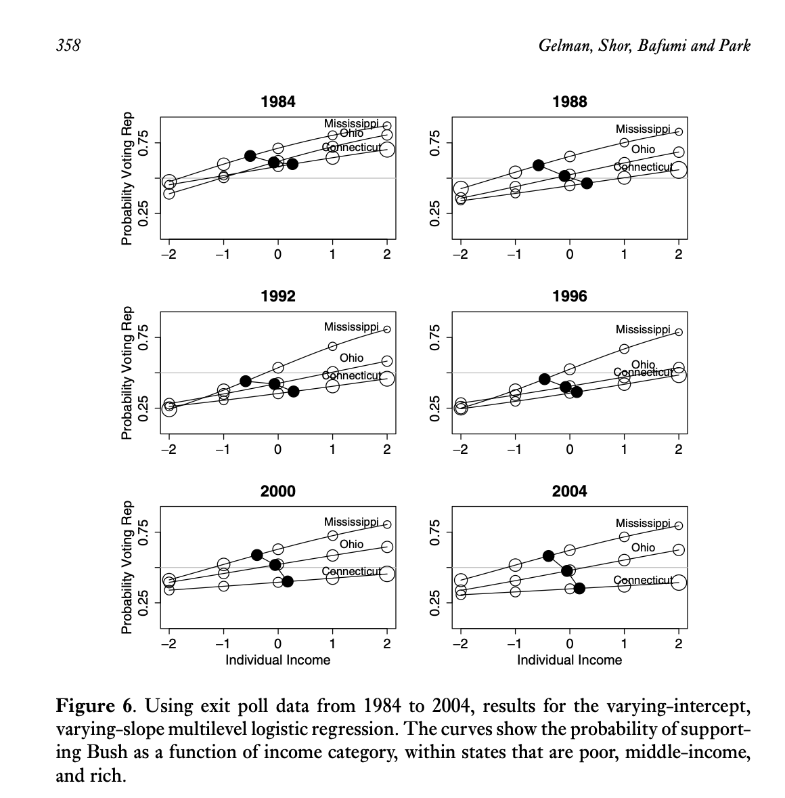
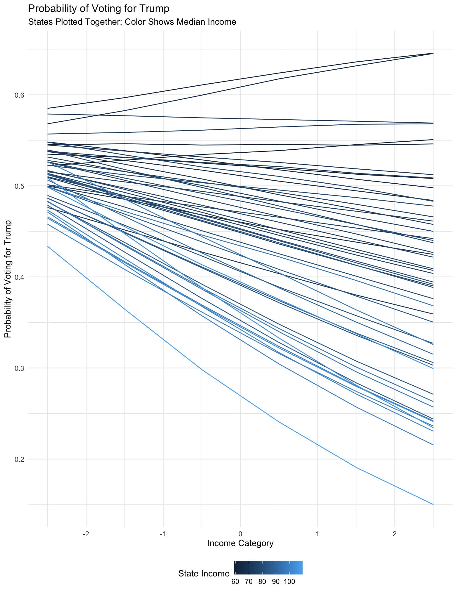
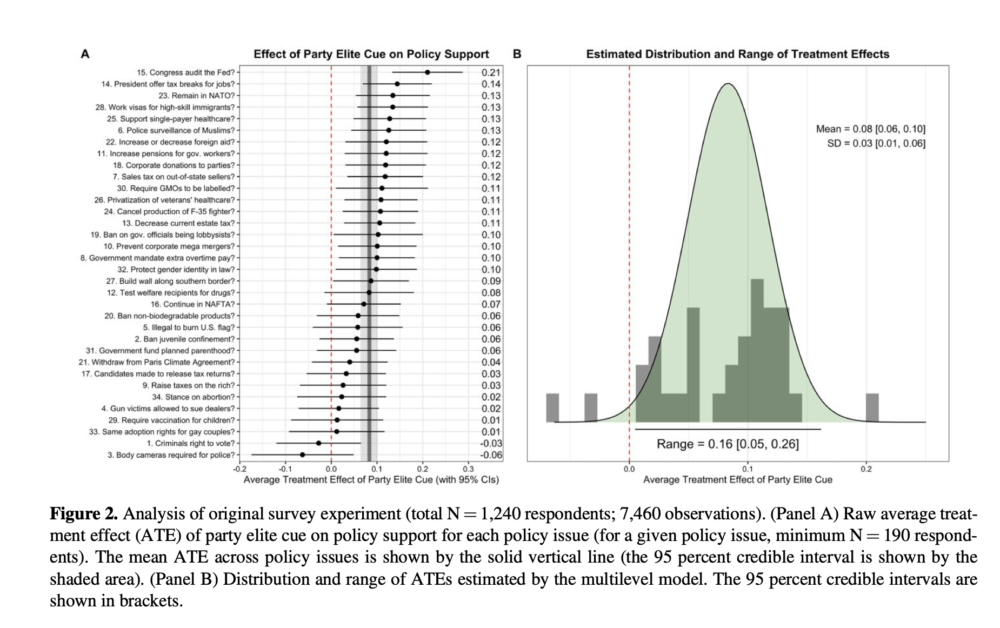
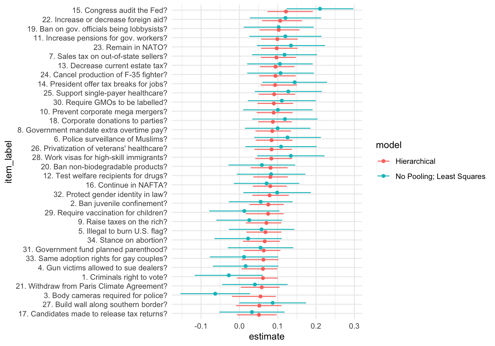
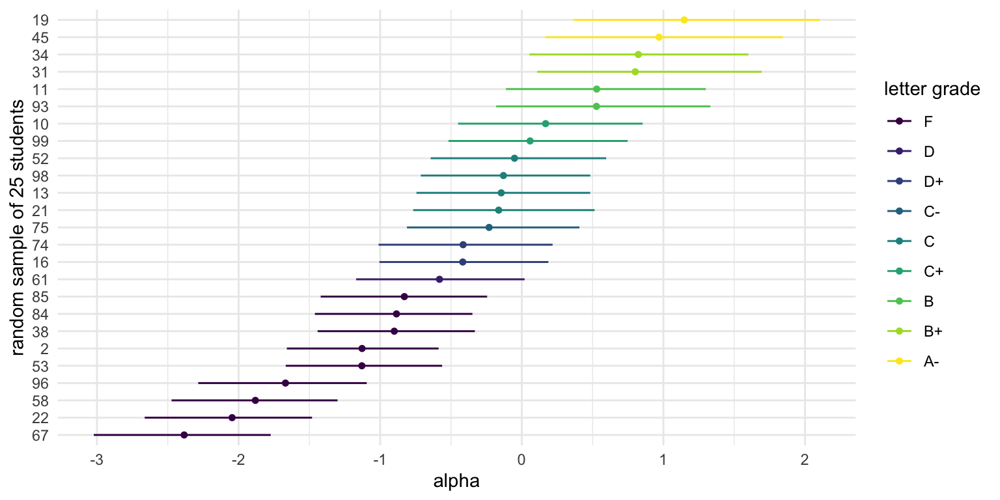
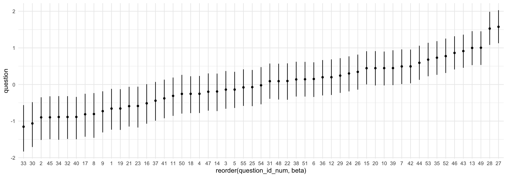
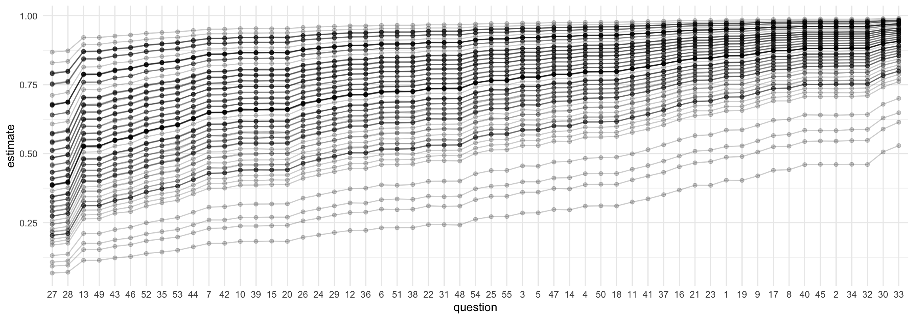
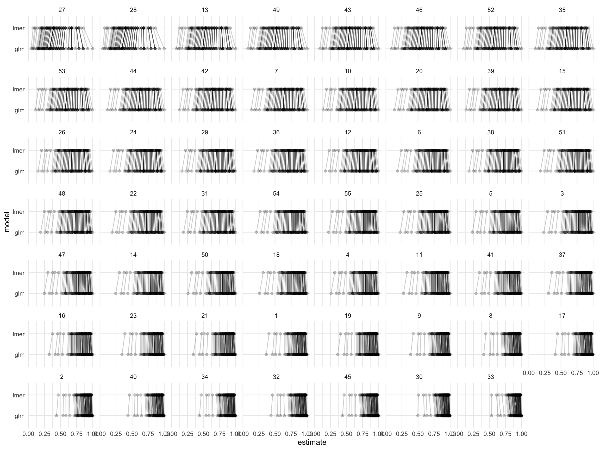
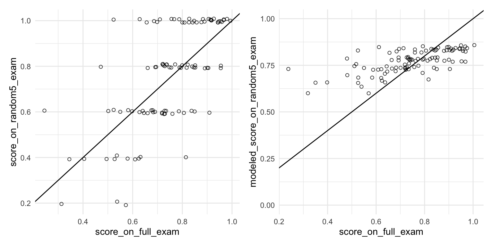

# generally useful packages
library(tidyverse)
library(marginaleffects)
library(modelsummary)
# for fitting hierarchical models
library(lme4)
library(brms) # see also rstanarm::stan_lmer()
library(rstan)
# for post-processing simulations
library(tidybayes)
# preferred order (most preferred first):
library(conflicted)
conflict_prefer_all("dplyr", quiet = TRUE)
conflict_prefer_all("tidyr", quiet = TRUE)
conflict_prefer_all("tidybayes", quiet = TRUE)
conflict_prefer_all("brms", quiet = TRUE)
conflict_prefer_all("rstan", quiet = TRUE)
conflict_prefer_all("patchwork", quiet = TRUE) IRT
Opening Comments
- Workshop
- When would be a good week for rehearsals and workshops? I’m going to be giving RIBC students extra credit to attend.
- Paper
Here are the packages we’re using:
Rich State, Poor State, Red State, Blue State
Variables
state_name: U.S. state name joined from state_income by FIPS state_code.state_median_incomeState median household income (in thousands of 2024 dollars) from state_income. Example:92.1= $92,100.rs_state_median_income: Rescaled version of state_median_income using arm::rescale() (mean 0, SD 0.5).; i.e.,income: Numeric scores corresponding to income brackets so that (1) higher numeric values indicate higher household income and (2) the middle is zero.ANES Category Income Range (2024 USD) Recode 1 Under $9,999 −2.5 2 $10,000–$29,999 −1.5 3 $30,000–$59,999 −0.5 4 $60,000–$99,999 0.5 5 $100,000–$249,999 1.5 6 $250,000 or more 2.5 vote_rep: 0/1 indicator of voting for the Republican candidate Donald Trump. Derived from ANES presidential vote V242067 after filtering to major-party voters only.
Results
Rows: 3,365
Columns: 5
$ state_name <chr> "Oklahoma", "Virginia", "Colorado", "Wisconsin", "Wiscons…
$ state_median_income <dbl> 66.1, 92.1, 97.1, 77.5, 77.5, 92.1, 81.1, 104.8, 99.8, 81…
$ rs_state_median_income <dbl> -0.5953, 0.4122, 0.6060, -0.1536, -0.1536, 0.4122, -0.014…
$ income <dbl> 1.5, 1.5, -0.5, -0.5, 1.5, 2.5, -0.5, 2.5, 1.5, 0.5, 1.5,…
$ vote_rep <dbl> 1, 0, 1, 1, 0, 0, 1, 0, 0, 0, 0, 0, 1, 0, 0, 1, 0, 0, 0, …Fit model.
Use predictions() to generate
\[ E(\text{Vote R} \mid \text{Individual Income}, \text{State Income}). \]
Code
Rows: 51
Columns: 3
$ state_name <chr> "Oklahoma", "Virginia", "Colorado", "Wisconsin", "Nevada"…
$ state_median_income <dbl> 66.1, 92.1, 97.1, 77.5, 81.1, 104.8, 99.8, 85.8, 80.0, 81…
$ rs_state_median_income <dbl> -0.59534, 0.41222, 0.60598, -0.15357, -0.01406, 0.90437, …Code
Rows: 51
Columns: 4
$ state_name <chr> "Alabama", "Alaska", "Arizona", "Arkansas", "California",…
$ state_median_income <dbl> 66.7, 95.7, 81.5, 62.1, 100.1, 97.1, 96.0, 87.5, 109.7, 7…
$ rs_state_median_income <dbl> -0.57209, 0.55173, 0.00144, -0.75035, 0.72224, 0.60598, 0…
$ income <lgl> NA, NA, NA, NA, NA, NA, NA, NA, NA, NA, NA, NA, NA, NA, N…Plotting the estimates
What’s going on here?

Code
ggplot(p, aes(x = income, y = estimate, group = state_name, color = state_median_income)) +
geom_line() +
labs(x = "Income Category",
y = "Probability of Voting for Trump",
title = "Probability of Voting for Trump",
subtitle = "States Plotted Together; Color Shows Median Income",
color = "State Income") +
theme(legend.position = "bottom")
Tappin (2023)

Data
outcome_recode_01is the outcome variablecueis the treatment indicatoritemindexes the policypidindexes respondents.
Code
# load Tappin's (2023) data
# - from https://osf.io/t2bpj/
df <- read_rds("data/open_data.rds")
# following Tappin, do a little wrangling
# - from analysis__original_exp.R at https://osf.io/t2bpj/
df_for_model <-
df %>%
filter(continue_check == 2,
item %in% c(1:34)) %>%
filter(pol_party != 4) %>%
dplyr::select(pid,
outcome_recode_01,
cue,
item,
item_label,
word_captcha,
policy_group,
order_variable) %>%
filter(!is.na(outcome_recode_01)) |>
glimpse()Rows: 7,460
Columns: 8
$ pid <int> 5, 5, 5, 5, 5, 7, 7, 7, 7, 7, 7, 7, 8, 8, 8, 8, 8, 8, 8, 8, 10…
$ outcome_recode_01 <dbl> 0.833, 0.667, 0.000, 0.667, 0.167, 0.667, 0.500, 1.000, 0.500,…
$ cue <int> 0, 1, 0, 1, 0, 1, 0, 0, 0, 0, 1, 0, 1, 0, 0, 1, 1, 1, 1, 0, 0,…
$ item <dbl> 1, 4, 6, 9, 18, 1, 4, 5, 13, 14, 30, 34, 4, 5, 8, 17, 20, 25, …
$ item_label <chr> "1. Criminals right to vote?", "4. Gun victims allowed to sue …
$ word_captcha <chr> "hello", "hello", "hello", "hello", "hello", "hello", "hello",…
$ policy_group <chr> "Crime", "Domestic policy", "Domestic policy", "Economy", "Ele…
$ order_variable <dbl> 4, 1, 6, 8, 5, 2, 4, 6, 3, 7, 5, 1, 4, 6, 8, 2, 7, 3, 1, 5, 2,…Fit models
Fit linear model; do {marginaleffects}.
Fit hierarchical model.
Do {marginaleffects}; combine with above.
Plot estimates

IRT
This week, I introduce the idea of a IRT model.
This is just one specific type of hierarchical model.
The answers data
The answers dataset has answers from hypothetical students to real questions from a recent exam.
question_id_numindexes the 55 questions on the exam.student_id_numindexes the 100 students who took the exam.correct_answerindicates (0/1) where the student answered the question correctly.
Rows: 5,500
Columns: 3
$ student_id_num <dbl> 1, 1, 1, 1, 1, 1, 1, 1, 1, 1, 1, 1, 1, 1, 1, 1, 1, 1, 1, 1, 1, 1…
$ question_id_num <dbl> 1, 2, 3, 4, 5, 6, 7, 8, 9, 10, 11, 12, 13, 14, 15, 16, 17, 18, 1…
$ correct_answer <dbl> 1, 1, 1, 1, 1, 1, 1, 1, 1, 1, 1, 1, 1, 1, 0, 1, 1, 1, 1, 1, 1, 1…Grades on the exam
grades <- answers %>%
group_by(student_id_num) %>%
summarize(proportion_correct = mean(correct_answer)) %>%
mutate(
letter_grade = cut(
proportion_correct,
breaks = c(-Inf, 0.60, 0.63, 0.67, 0.70, 0.73, 0.77, 0.80, 0.83, 0.87, 0.90, 0.93, Inf),
labels = c("F", "D-", "D", "D+", "C-", "C", "C+", "B-", "B", "B+", "A-", "A"),
ordered_result = TRUE
)
)
grades |> filter(student_id_num <= 10)# A tibble: 10 × 3
student_id_num proportion_correct letter_grade
<dbl> <dbl> <ord>
1 1 0.909 A-
2 2 0.527 F
3 3 0.764 C
4 4 0.727 C-
5 5 0.964 A
6 6 0.818 B-
7 7 0.818 B-
8 8 0.782 C+
9 9 0.564 F
10 10 0.8 C+ Rasch / 1-PL model
Indices
- Answers: \(n = 1, \dots, N\). (\(N = 55 \times 100 = 5{,}500\) in our data.)
- Students: \(j = 1, \dots, J\). (\(J = 100\) in our data.)
- Questions: \(k = 1, \dots, K\). (\(K = 55\) in our data.)
Outcome: \(y_{n} \in \{0, 1\}\) indicates whether the \(n\)th answer is correct.
\[ y_n \sim \mathrm{Bernoulli}(\pi_n) \\ \pi_n = \text{logit}^{-1} \left( \mu + \alpha_{j[n]} - \beta_{k[n]} \right). \]
Parameters
- \(\pi_n\): the probability that answer \(n\) is correct
- \(\alpha_{j[n]}\): the ability of student \(j\) [who is giving the \(n\)th answer].
- Higher \(\alpha_j\) ⇒ more likely to answer correctly; more knowledgeable student.
- \(\beta_{k[n]}\): the difficulty of question \(k\) [which is associated with the \(n\)th answer].
- Higher \(\beta_k\) ⇒ less likely to answer correctly; harder item.
- \(\mu\): average difficulty across questions
Hierarchical Model
\[ \alpha_j \sim N(0,\sigma_\alpha^2)\\ \beta_k \sim N(0,\sigma_\beta^2) \]
Priors
\[ \sigma_\alpha \sim \mathrm{half\text{-}Cauchy}(0,1)\\ \sigma_\beta \sim \mathrm{half\text{-}Cauchy}(0,1) \]
\[ \mu \sim \mathrm{Cauchy}(0,1). \]
Stan model
data {
int<lower=1> N; // number of answers
int<lower=1> J; // number of students
int<lower=1> K; // number of questions
int<lower=1, upper=J> jj[N]; // student index for answer n
int<lower=1, upper=K> kk[N]; // question index for answer n
int<lower=0, upper=1> y[N]; // answer n is correct (0/1)
}
parameters {
real mu; // mean difficulty
vector[J] alpha; // abilities; one per student
vector[K] beta; // difficulties; one per question
real<lower=0> sigma_beta; // SD of difficulties
real<lower=0> sigma_alpha; // SD of abilities
}
model {
sigma_beta ~ cauchy(0, 1); // prior for SD of difficulties
sigma_alpha ~ cauchy(0, 1); // prior for SD of abilities
mu ~ cauchy(0, 1); // prior for mean difficulty
alpha ~ normal(0, sigma_alpha); // abilities
beta ~ normal(0, sigma_beta); // difficulties
for (n in 1:N) {
y[n] ~ bernoulli_logit(mu + alpha[jj[n]] - beta[kk[n]]); // likelihood
}
}Set up data for Stan
# make data for stan
data_list <- list(
# upper bounds of indices
N = nrow(answers), # - n in {1,...,N} indexes answers
J = max(answers$student_id_num), # - j in {1,...,J} indexes students
K = max(answers$question_id_num), # - k in {1,...,K} indexes questions
# indices for each respondent
jj = answers$student_id_num, # jj is a vector of student indices for each answer
kk = answers$question_id_num, # kk is a vector of question indices for each answer
# observed answers
y = answers$correct_answer
)jj and kk are subtle!
- Because all students answer all questions, we have \(N = 100 \times 55 = 5,500\) answers.
jjandkkare both length-\(N\) vectors.jj[n]tells us the student who gave the \(n\)th answer.kk[n]tells us the question that goes with the \(n\)th answer.
What do these data look like?
A trick
I like to create a character string that has the Stan model, so that it’s right in my R script. (Or you can create a file.)
stan_code <- "
data {
int<lower=1> N; // number of answers
int<lower=1> J; // number of students
int<lower=1> K; // number of questions
int<lower=1, upper=J> jj[N]; // student index for answer n
int<lower=1, upper=K> kk[N]; // question index for answer n
int<lower=0, upper=1> y[N]; // answer n is correct (0/1)
}
parameters {
real mu; // mean difficulty
vector[J] alpha; // abilities; one per student
vector[K] beta; // difficulties; one per question
real<lower=0> sigma_beta; // SD of difficulties
real<lower=0> sigma_alpha; // SD of abilities
}
model {
sigma_beta ~ cauchy(0, 1); // prior for SD of difficulties
sigma_alpha ~ cauchy(0, 1); // prior for SD of abilities
mu ~ cauchy(0, 1); // prior for mean difficulty
alpha ~ normal(0, sigma_alpha); // abilities
beta ~ normal(0, sigma_beta); // difficulties
for (n in 1:N) {
y[n] ~ bernoulli_logit(mu + alpha[jj[n]] - beta[kk[n]]); // likelihood
}
}
"Fit Stan model using {rstan}
Print the fit
Was iter large enough?
Inference for Stan model: anon_model.
10 chains, each with iter=1000; warmup=500; thin=1;
post-warmup draws per chain=500, total post-warmup draws=5000.
mean se_mean sd 2.5% 25% 50% 75% 97.5% n_eff Rhat
mu 1.34 0.01 0.14 1.06 1.25 1.35 1.44 1.63 557 1.03
alpha[1] 0.97 0.01 0.42 0.18 0.68 0.96 1.25 1.82 4378 1.00
alpha[2] -1.14 0.01 0.29 -1.69 -1.33 -1.14 -0.95 -0.57 2877 1.00
alpha[3] -0.04 0.01 0.33 -0.68 -0.27 -0.05 0.17 0.64 3551 1.00
alpha[4] -0.24 0.01 0.32 -0.86 -0.45 -0.24 -0.02 0.41 3690 1.00
alpha[5] 1.58 0.01 0.50 0.67 1.24 1.56 1.90 2.64 5901 1.00
alpha[6] 0.28 0.01 0.35 -0.36 0.04 0.27 0.52 0.98 4031 1.00
alpha[7] 0.29 0.01 0.35 -0.38 0.05 0.28 0.52 0.99 4187 1.00
alpha[8] 0.06 0.01 0.34 -0.57 -0.17 0.06 0.29 0.73 3995 1.00
alpha[9] -0.98 0.01 0.30 -1.56 -1.19 -0.99 -0.79 -0.39 2797 1.00
alpha[10] 0.17 0.01 0.34 -0.49 -0.06 0.17 0.39 0.85 3771 1.00
alpha[11] 0.53 0.01 0.38 -0.17 0.26 0.52 0.78 1.31 3818 1.00
alpha[12] -0.75 0.01 0.30 -1.32 -0.94 -0.75 -0.55 -0.18 3446 1.00
alpha[13] -0.14 0.01 0.33 -0.77 -0.36 -0.15 0.07 0.51 3635 1.00
alpha[14] 1.57 0.01 0.50 0.66 1.22 1.55 1.90 2.62 5693 1.00
alpha[15] 0.17 0.01 0.34 -0.46 -0.07 0.17 0.39 0.86 3965 1.00
alpha[16] -0.42 0.01 0.31 -1.01 -0.62 -0.42 -0.21 0.20 3368 1.00
alpha[17] -0.74 0.01 0.30 -1.30 -0.95 -0.75 -0.54 -0.15 3454 1.00
alpha[18] 1.58 0.01 0.50 0.66 1.23 1.56 1.91 2.62 5288 1.00
alpha[19] 1.16 0.01 0.45 0.35 0.85 1.14 1.45 2.08 5042 1.00
alpha[20] 0.53 0.01 0.37 -0.19 0.27 0.52 0.78 1.27 4335 1.00
alpha[21] -0.14 0.01 0.33 -0.76 -0.36 -0.14 0.08 0.53 3753 1.00
alpha[22] -2.06 0.01 0.31 -2.67 -2.26 -2.06 -1.85 -1.46 2549 1.00
alpha[23] -0.67 0.01 0.30 -1.24 -0.87 -0.67 -0.47 -0.07 3417 1.00
alpha[24] -0.75 0.01 0.30 -1.33 -0.95 -0.75 -0.55 -0.17 3112 1.00
alpha[25] 0.17 0.01 0.35 -0.49 -0.07 0.16 0.40 0.88 4058 1.00
alpha[26] 2.14 0.01 0.60 1.07 1.72 2.10 2.51 3.43 4606 1.00
alpha[27] -0.58 0.01 0.30 -1.18 -0.78 -0.59 -0.38 0.01 3461 1.00
alpha[28] 0.97 0.01 0.42 0.21 0.68 0.95 1.24 1.84 4386 1.00
alpha[29] 1.36 0.01 0.46 0.52 1.04 1.35 1.66 2.31 4991 1.00
alpha[30] 0.97 0.01 0.40 0.24 0.69 0.95 1.23 1.78 4799 1.00
alpha[31] 0.82 0.01 0.41 0.06 0.53 0.80 1.09 1.65 4600 1.00
alpha[32] 1.59 0.01 0.52 0.66 1.23 1.57 1.91 2.70 5250 1.00
alpha[33] 0.98 0.01 0.42 0.20 0.68 0.97 1.25 1.83 5633 1.00
alpha[34] 0.82 0.01 0.40 0.06 0.54 0.80 1.07 1.62 4194 1.00
alpha[35] 1.36 0.01 0.46 0.51 1.03 1.34 1.65 2.29 4785 1.00
alpha[36] -0.41 0.01 0.31 -1.03 -0.63 -0.41 -0.20 0.21 2993 1.00
alpha[37] -0.50 0.01 0.31 -1.10 -0.71 -0.51 -0.29 0.13 3877 1.00
alpha[38] -0.90 0.01 0.29 -1.47 -1.10 -0.90 -0.71 -0.34 2953 1.00
alpha[39] 0.53 0.01 0.37 -0.17 0.28 0.52 0.78 1.29 3889 1.00
alpha[40] -0.50 0.01 0.32 -1.10 -0.72 -0.50 -0.29 0.11 3330 1.00
alpha[41] -1.36 0.01 0.30 -1.94 -1.56 -1.36 -1.16 -0.78 3004 1.00
alpha[42] 0.97 0.01 0.42 0.18 0.69 0.96 1.24 1.82 3878 1.00
alpha[43] -0.41 0.01 0.31 -0.98 -0.62 -0.41 -0.20 0.21 2351 1.00
alpha[44] 0.97 0.01 0.43 0.18 0.68 0.96 1.24 1.86 4512 1.00
alpha[45] 0.98 0.01 0.42 0.20 0.69 0.96 1.25 1.83 4889 1.00
alpha[46] 0.41 0.01 0.36 -0.27 0.17 0.39 0.65 1.15 3600 1.00
alpha[47] 0.41 0.01 0.36 -0.26 0.17 0.39 0.64 1.13 3198 1.00
alpha[48] -0.04 0.01 0.34 -0.68 -0.26 -0.04 0.18 0.65 3599 1.00
alpha[49] -1.05 0.01 0.29 -1.63 -1.25 -1.06 -0.86 -0.47 3242 1.00
alpha[50] -1.21 0.01 0.29 -1.79 -1.41 -1.21 -1.01 -0.64 2767 1.00
alpha[51] -0.23 0.01 0.32 -0.84 -0.46 -0.23 -0.02 0.40 3024 1.00
alpha[52] -0.05 0.01 0.33 -0.66 -0.27 -0.06 0.17 0.60 3787 1.00
alpha[53] -1.13 0.01 0.29 -1.69 -1.34 -1.14 -0.94 -0.55 3170 1.00
alpha[54] -0.67 0.01 0.32 -1.27 -0.89 -0.68 -0.46 -0.04 3103 1.00
alpha[55] 0.41 0.01 0.37 -0.27 0.16 0.40 0.65 1.17 4837 1.00
alpha[56] 0.28 0.01 0.36 -0.38 0.04 0.27 0.52 1.02 4000 1.00
alpha[57] 0.52 0.01 0.37 -0.19 0.27 0.51 0.77 1.27 3784 1.00
alpha[58] -1.89 0.01 0.30 -2.51 -2.09 -1.90 -1.69 -1.31 2827 1.00
alpha[59] 0.81 0.01 0.40 0.05 0.53 0.80 1.07 1.65 5544 1.00
alpha[60] -0.14 0.01 0.33 -0.77 -0.36 -0.15 0.08 0.50 4026 1.00
alpha[61] -0.58 0.01 0.30 -1.18 -0.79 -0.58 -0.38 0.03 3077 1.00
alpha[62] -0.42 0.01 0.31 -1.02 -0.63 -0.42 -0.22 0.19 2684 1.00
alpha[63] -0.23 0.01 0.32 -0.85 -0.44 -0.23 -0.02 0.40 2679 1.00
alpha[64] 0.17 0.01 0.34 -0.48 -0.06 0.17 0.40 0.87 4265 1.00
alpha[65] 1.58 0.01 0.50 0.66 1.24 1.56 1.89 2.63 5581 1.00
alpha[66] -0.23 0.01 0.33 -0.85 -0.46 -0.24 -0.01 0.41 4193 1.00
alpha[67] -2.41 0.01 0.32 -3.05 -2.62 -2.40 -2.19 -1.80 3350 1.00
alpha[68] -1.06 0.01 0.29 -1.63 -1.26 -1.06 -0.86 -0.48 2919 1.00
alpha[69] -1.13 0.01 0.29 -1.69 -1.33 -1.14 -0.94 -0.55 3101 1.00
alpha[70] -1.13 0.01 0.30 -1.70 -1.33 -1.13 -0.94 -0.53 2662 1.00
alpha[71] 0.40 0.01 0.36 -0.27 0.15 0.39 0.65 1.11 3684 1.00
alpha[72] -0.32 0.01 0.32 -0.94 -0.53 -0.32 -0.11 0.32 2868 1.00
alpha[73] 0.98 0.01 0.42 0.17 0.69 0.96 1.25 1.83 5748 1.00
alpha[74] -0.41 0.01 0.32 -1.03 -0.63 -0.42 -0.20 0.23 3401 1.00
alpha[75] -0.24 0.01 0.32 -0.86 -0.45 -0.24 -0.03 0.41 2986 1.00
alpha[76] -0.24 0.01 0.32 -0.84 -0.45 -0.24 -0.02 0.38 3580 1.00
alpha[77] 1.35 0.01 0.48 0.47 1.01 1.33 1.66 2.34 5266 1.00
alpha[78] -1.29 0.01 0.30 -1.85 -1.50 -1.29 -1.09 -0.72 2442 1.00
alpha[79] 0.17 0.01 0.34 -0.47 -0.06 0.16 0.40 0.88 3514 1.00
alpha[80] -0.23 0.01 0.32 -0.83 -0.46 -0.24 -0.01 0.40 3355 1.00
alpha[81] -0.24 0.01 0.32 -0.86 -0.45 -0.24 -0.02 0.42 3471 1.00
alpha[82] 0.67 0.01 0.39 -0.06 0.40 0.66 0.93 1.45 5057 1.00
alpha[83] -0.59 0.01 0.31 -1.20 -0.79 -0.59 -0.38 0.02 3290 1.00
alpha[84] -0.91 0.01 0.30 -1.49 -1.10 -0.91 -0.71 -0.32 2866 1.00
alpha[85] -0.83 0.01 0.30 -1.40 -1.03 -0.83 -0.63 -0.23 3169 1.00
alpha[86] -0.49 0.01 0.32 -1.10 -0.71 -0.50 -0.28 0.13 3314 1.00
alpha[87] 1.35 0.01 0.47 0.49 1.02 1.33 1.65 2.32 4899 1.00
alpha[88] 0.28 0.01 0.35 -0.39 0.04 0.27 0.52 1.00 4031 1.00
alpha[89] 0.07 0.01 0.34 -0.58 -0.17 0.06 0.29 0.74 3448 1.00
alpha[90] 0.40 0.01 0.36 -0.29 0.16 0.40 0.63 1.15 4135 1.00
alpha[91] 1.85 0.01 0.55 0.87 1.46 1.82 2.19 3.01 4415 1.00
alpha[92] -0.75 0.01 0.31 -1.34 -0.96 -0.75 -0.54 -0.14 3242 1.00
alpha[93] 0.53 0.01 0.38 -0.16 0.27 0.51 0.78 1.32 3817 1.00
alpha[94] -0.04 0.01 0.33 -0.68 -0.26 -0.04 0.18 0.61 3685 1.00
alpha[95] -0.22 0.01 0.32 -0.81 -0.44 -0.23 -0.01 0.43 3278 1.00
alpha[96] -1.66 0.01 0.29 -2.25 -1.85 -1.67 -1.47 -1.10 3193 1.00
alpha[97] -0.67 0.01 0.30 -1.24 -0.87 -0.66 -0.46 -0.08 3111 1.00
alpha[98] -0.14 0.01 0.32 -0.75 -0.35 -0.14 0.08 0.50 3964 1.00
alpha[99] 0.07 0.01 0.33 -0.56 -0.16 0.06 0.28 0.74 3667 1.00
alpha[100] -0.23 0.01 0.32 -0.83 -0.45 -0.24 -0.03 0.41 3328 1.00
beta[1] -0.66 0.00 0.28 -1.23 -0.85 -0.66 -0.47 -0.12 4318 1.00
beta[2] -0.91 0.00 0.30 -1.52 -1.11 -0.90 -0.69 -0.35 3656 1.00
beta[3] -0.14 0.00 0.26 -0.66 -0.31 -0.14 0.03 0.37 3409 1.00
beta[4] -0.26 0.00 0.26 -0.78 -0.43 -0.25 -0.08 0.23 3450 1.00
beta[5] -0.14 0.00 0.26 -0.64 -0.31 -0.14 0.04 0.35 3380 1.00
beta[6] 0.14 0.00 0.24 -0.34 -0.02 0.15 0.31 0.61 3039 1.00
beta[7] 0.49 0.00 0.24 0.01 0.33 0.49 0.65 0.96 3088 1.00
beta[8] -0.82 0.01 0.31 -1.46 -1.01 -0.81 -0.60 -0.24 3788 1.00
beta[9] -0.73 0.00 0.29 -1.31 -0.92 -0.73 -0.53 -0.19 3537 1.00
beta[10] 0.45 0.00 0.24 -0.03 0.28 0.45 0.61 0.90 2910 1.00
beta[11] -0.32 0.00 0.27 -0.86 -0.49 -0.31 -0.14 0.19 2864 1.00
beta[12] 0.20 0.00 0.24 -0.29 0.04 0.20 0.36 0.69 2486 1.00
beta[13] 0.99 0.00 0.23 0.53 0.84 1.00 1.15 1.46 2907 1.00
beta[14] -0.20 0.00 0.26 -0.73 -0.37 -0.19 -0.01 0.30 3127 1.00
beta[15] 0.45 0.00 0.24 0.00 0.29 0.44 0.61 0.91 2575 1.00
beta[16] -0.52 0.00 0.28 -1.07 -0.70 -0.51 -0.32 0.01 3889 1.00
beta[17] -0.81 0.01 0.30 -1.43 -1.02 -0.81 -0.60 -0.25 3523 1.00
beta[18] -0.26 0.00 0.26 -0.78 -0.43 -0.25 -0.08 0.22 3187 1.00
beta[19] -0.66 0.00 0.29 -1.24 -0.85 -0.66 -0.47 -0.13 3753 1.00
beta[20] 0.45 0.00 0.24 -0.03 0.29 0.45 0.61 0.91 2405 1.00
beta[21] -0.59 0.00 0.28 -1.15 -0.78 -0.59 -0.40 -0.06 3726 1.00
beta[22] 0.09 0.00 0.25 -0.42 -0.09 0.10 0.26 0.58 3018 1.00
beta[23] -0.60 0.00 0.28 -1.18 -0.78 -0.59 -0.40 -0.06 3762 1.00
beta[24] 0.30 0.00 0.25 -0.19 0.13 0.30 0.46 0.77 2522 1.00
beta[25] -0.08 0.00 0.26 -0.59 -0.25 -0.07 0.10 0.40 3022 1.00
beta[26] 0.35 0.00 0.25 -0.14 0.19 0.34 0.51 0.82 2654 1.00
beta[27] 1.58 0.00 0.23 1.13 1.42 1.58 1.73 2.03 2653 1.00
beta[28] 1.53 0.00 0.23 1.08 1.37 1.53 1.69 1.99 2978 1.00
beta[29] 0.24 0.00 0.24 -0.23 0.08 0.24 0.40 0.72 3110 1.00
beta[30] -1.07 0.00 0.31 -1.71 -1.28 -1.06 -0.86 -0.48 4270 1.00
beta[31] 0.09 0.00 0.25 -0.39 -0.07 0.09 0.26 0.57 3315 1.00
beta[32] -0.90 0.00 0.30 -1.49 -1.10 -0.89 -0.69 -0.32 3971 1.00
beta[33] -1.17 0.01 0.32 -1.83 -1.38 -1.15 -0.95 -0.56 3781 1.00
beta[34] -0.90 0.00 0.30 -1.51 -1.10 -0.89 -0.69 -0.32 4263 1.00
beta[35] 0.73 0.00 0.23 0.26 0.58 0.73 0.88 1.18 2707 1.00
beta[36] 0.20 0.00 0.25 -0.30 0.03 0.20 0.37 0.67 2655 1.00
beta[37] -0.45 0.00 0.27 -0.99 -0.63 -0.44 -0.26 0.07 3636 1.00
beta[38] 0.14 0.00 0.24 -0.33 -0.03 0.14 0.30 0.62 2810 1.00
beta[39] 0.45 0.00 0.24 -0.02 0.29 0.45 0.61 0.93 2398 1.00
beta[40] -0.89 0.01 0.30 -1.50 -1.09 -0.89 -0.69 -0.34 3335 1.00
beta[41] -0.38 0.00 0.27 -0.92 -0.56 -0.38 -0.20 0.13 3993 1.00
beta[42] 0.49 0.00 0.24 0.03 0.34 0.49 0.65 0.95 2694 1.00
beta[43] 0.91 0.00 0.23 0.46 0.76 0.91 1.07 1.36 2777 1.00
beta[44] 0.59 0.00 0.24 0.13 0.43 0.59 0.75 1.06 2364 1.01
beta[45] -0.90 0.00 0.30 -1.49 -1.10 -0.90 -0.69 -0.32 4379 1.00
beta[46] 0.87 0.00 0.23 0.41 0.71 0.86 1.02 1.32 2685 1.00
beta[47] -0.20 0.00 0.26 -0.72 -0.37 -0.20 -0.02 0.30 3367 1.00
beta[48] 0.09 0.00 0.25 -0.41 -0.08 0.09 0.25 0.57 2740 1.00
beta[49] 1.00 0.00 0.23 0.53 0.84 1.00 1.16 1.45 2553 1.00
beta[50] -0.26 0.00 0.27 -0.80 -0.44 -0.26 -0.08 0.26 3346 1.00
beta[51] 0.14 0.00 0.24 -0.33 -0.02 0.14 0.31 0.62 2982 1.00
beta[52] 0.78 0.00 0.24 0.31 0.62 0.77 0.94 1.25 2851 1.00
beta[53] 0.68 0.00 0.23 0.22 0.52 0.68 0.84 1.14 2841 1.00
beta[54] -0.03 0.00 0.26 -0.54 -0.20 -0.02 0.15 0.47 3124 1.00
beta[55] -0.08 0.00 0.25 -0.58 -0.25 -0.08 0.09 0.41 3272 1.00
sigma_beta 0.71 0.00 0.08 0.57 0.65 0.70 0.76 0.88 4501 1.00
sigma_alpha 0.98 0.00 0.08 0.82 0.91 0.97 1.03 1.15 3229 1.00
lp__ -2656.07 0.20 9.06 -2674.38 -2661.98 -2655.85 -2649.82 -2638.98 2094 1.00
Samples were drawn using NUTS(diag_e) at Wed Nov 12 08:14:38 2025.
For each parameter, n_eff is a crude measure of effective sample size,
and Rhat is the potential scale reduction factor on split chains (at
convergence, Rhat=1).Using spread_draws() from {tidybayes}
# A tibble: 500,000 × 5
# Groups: student_id_num [100]
student_id_num alpha .chain .iteration .draw
<int> <dbl> <int> <int> <int>
1 1 1.63 1 1 1
2 1 0.241 1 2 2
3 1 1.10 1 3 3
4 1 0.948 1 4 4
5 1 1.18 1 5 5
6 1 0.941 1 6 6
7 1 1.15 1 7 7
8 1 0.869 1 8 8
9 1 0.735 1 9 9
10 1 0.908 1 10 10
# ℹ 499,990 more rowsAdding mean_qi() from {tidybayes}
# A tibble: 100 × 7
student_id_num alpha .lower .upper .width .point .interval
<int> <dbl> <dbl> <dbl> <dbl> <chr> <chr>
1 1 0.959 0.180 1.82 0.95 median qi
2 2 -1.14 -1.69 -0.574 0.95 median qi
3 3 -0.0507 -0.680 0.643 0.95 median qi
4 4 -0.242 -0.858 0.407 0.95 median qi
5 5 1.56 0.674 2.64 0.95 median qi
6 6 0.266 -0.363 0.980 0.95 median qi
7 7 0.278 -0.383 0.994 0.95 median qi
8 8 0.0573 -0.573 0.734 0.95 median qi
9 9 -0.988 -1.56 -0.387 0.95 median qi
10 10 0.169 -0.487 0.852 0.95 median qi
# ℹ 90 more rowsPlot the abilities for 25 random students
Code
fit %>%
spread_draws(alpha[student_id_num], ndraws = 1000) %>%
median_qi() %>%
left_join(grades) %>%
slice_sample(n = 25) %>%
ggplot(aes(x = alpha, xmin = .lower, xmax = .upper,
y = reorder(student_id_num, alpha),
color = letter_grade)) +
#geom_label(aes(label = scales::percent(proportion_correct, accuracy = 1)), vjust = -0.3) +
geom_pointinterval(linewidth = 0.5, size = 0.5) +
theme_minimal() +
labs(y = "random sample of 25 students",
color = "letter grade")
Using spread_draws() from {tidybayes}
# A tibble: 275,000 × 5
# Groups: question_id_num [55]
question_id_num beta .chain .iteration .draw
<int> <dbl> <int> <int> <int>
1 1 -0.556 1 1 1
2 1 -0.472 1 2 2
3 1 -0.724 1 3 3
4 1 -0.727 1 4 4
5 1 -0.341 1 5 5
6 1 -0.927 1 6 6
7 1 -1.02 1 7 7
8 1 -0.782 1 8 8
9 1 -0.380 1 9 9
10 1 -1.02 1 10 10
# ℹ 274,990 more rowsAdding mean_qi() from {tidybayes}
# A tibble: 55 × 7
question_id_num beta .lower .upper .width .point .interval
<int> <dbl> <dbl> <dbl> <dbl> <chr> <chr>
1 1 -0.658 -1.23 -0.120 0.95 median qi
2 2 -0.899 -1.52 -0.350 0.95 median qi
3 3 -0.139 -0.663 0.367 0.95 median qi
4 4 -0.253 -0.780 0.233 0.95 median qi
5 5 -0.139 -0.642 0.346 0.95 median qi
6 6 0.150 -0.341 0.606 0.95 median qi
7 7 0.493 0.0110 0.959 0.95 median qi
8 8 -0.807 -1.46 -0.235 0.95 median qi
9 9 -0.729 -1.31 -0.187 0.95 median qi
10 10 0.447 -0.0250 0.900 0.95 median qi
# ℹ 45 more rowsNow sort the questions
# A tibble: 55 × 7
question_id_num beta .lower .upper .width .point .interval
<int> <dbl> <dbl> <dbl> <dbl> <chr> <chr>
1 27 1.58 1.13 2.03 0.95 median qi
2 28 1.53 1.08 1.99 0.95 median qi
3 49 1.00 0.534 1.45 0.95 median qi
4 13 0.999 0.529 1.46 0.95 median qi
5 43 0.912 0.456 1.36 0.95 median qi
6 46 0.862 0.410 1.32 0.95 median qi
7 52 0.775 0.314 1.25 0.95 median qi
8 35 0.732 0.264 1.18 0.95 median qi
9 53 0.679 0.225 1.14 0.95 median qi
10 44 0.593 0.128 1.06 0.95 median qi
# ℹ 45 more rowsPlot the difficulties

Fitting with brm()
The list of output from brm() includes a fit that is just the output from stan() above. We can use this element if we want, but the parameters have less nice names.
Inference for Stan model: anon_model.
10 chains, each with iter=1000; warmup=500; thin=1;
post-warmup draws per chain=500, total post-warmup draws=5000.
mean se_mean sd 2.5% 25% 50%
b_Intercept 1.36 0.01 0.15 1.07 1.26 1.36
sd_question_id_num__Intercept 0.71 0.00 0.08 0.58 0.66 0.71
sd_student_id_num__Intercept 0.98 0.00 0.09 0.82 0.92 0.97
Intercept 1.36 0.01 0.15 1.07 1.26 1.36
r_question_id_num[1,Intercept] 0.66 0.00 0.28 0.11 0.47 0.65
r_question_id_num[2,Intercept] 0.89 0.00 0.30 0.33 0.69 0.88
r_question_id_num[3,Intercept] 0.13 0.01 0.26 -0.38 -0.04 0.13
r_question_id_num[4,Intercept] 0.25 0.00 0.27 -0.27 0.07 0.24
r_question_id_num[5,Intercept] 0.13 0.00 0.26 -0.37 -0.05 0.13
r_question_id_num[6,Intercept] -0.15 0.00 0.25 -0.64 -0.32 -0.15
r_question_id_num[7,Intercept] -0.50 0.00 0.24 -0.97 -0.67 -0.51
r_question_id_num[8,Intercept] 0.82 0.01 0.30 0.25 0.62 0.81
r_question_id_num[9,Intercept] 0.73 0.01 0.30 0.17 0.53 0.73
r_question_id_num[10,Intercept] -0.45 0.00 0.25 -0.92 -0.63 -0.46
r_question_id_num[11,Intercept] 0.32 0.00 0.27 -0.21 0.13 0.32
r_question_id_num[12,Intercept] -0.20 0.00 0.25 -0.66 -0.37 -0.21
r_question_id_num[13,Intercept] -1.01 0.00 0.23 -1.46 -1.17 -1.02
r_question_id_num[14,Intercept] 0.19 0.01 0.27 -0.32 0.02 0.19
r_question_id_num[15,Intercept] -0.45 0.00 0.24 -0.93 -0.62 -0.46
r_question_id_num[16,Intercept] 0.52 0.01 0.28 -0.02 0.33 0.51
r_question_id_num[17,Intercept] 0.81 0.01 0.30 0.25 0.60 0.81
r_question_id_num[18,Intercept] 0.26 0.01 0.27 -0.25 0.07 0.25
r_question_id_num[19,Intercept] 0.66 0.01 0.29 0.11 0.46 0.66
r_question_id_num[20,Intercept] -0.45 0.00 0.24 -0.92 -0.61 -0.45
r_question_id_num[21,Intercept] 0.58 0.01 0.28 0.05 0.39 0.57
r_question_id_num[22,Intercept] -0.09 0.01 0.25 -0.59 -0.26 -0.09
r_question_id_num[23,Intercept] 0.59 0.01 0.29 0.05 0.40 0.59
r_question_id_num[24,Intercept] -0.30 0.00 0.25 -0.79 -0.47 -0.31
r_question_id_num[25,Intercept] 0.07 0.00 0.25 -0.41 -0.10 0.07
r_question_id_num[26,Intercept] -0.35 0.00 0.24 -0.82 -0.52 -0.36
r_question_id_num[27,Intercept] -1.58 0.00 0.23 -2.03 -1.74 -1.58
r_question_id_num[28,Intercept] -1.54 0.00 0.24 -2.01 -1.69 -1.53
r_question_id_num[29,Intercept] -0.25 0.00 0.25 -0.74 -0.42 -0.26
r_question_id_num[30,Intercept] 1.07 0.01 0.33 0.46 0.85 1.06
r_question_id_num[31,Intercept] -0.09 0.00 0.25 -0.58 -0.27 -0.09
r_question_id_num[32,Intercept] 0.90 0.00 0.30 0.34 0.69 0.89
r_question_id_num[33,Intercept] 1.17 0.01 0.32 0.57 0.95 1.16
r_question_id_num[34,Intercept] 0.90 0.01 0.31 0.32 0.69 0.89
r_question_id_num[35,Intercept] -0.73 0.00 0.24 -1.20 -0.90 -0.73
r_question_id_num[36,Intercept] -0.20 0.00 0.25 -0.67 -0.37 -0.20
r_question_id_num[37,Intercept] 0.44 0.00 0.27 -0.08 0.25 0.43
r_question_id_num[38,Intercept] -0.15 0.01 0.25 -0.64 -0.32 -0.14
r_question_id_num[39,Intercept] -0.46 0.01 0.24 -0.92 -0.62 -0.46
r_question_id_num[40,Intercept] 0.89 0.01 0.31 0.30 0.68 0.88
r_question_id_num[41,Intercept] 0.37 0.01 0.27 -0.15 0.19 0.37
r_question_id_num[42,Intercept] -0.50 0.00 0.24 -0.96 -0.65 -0.50
r_question_id_num[43,Intercept] -0.92 0.00 0.23 -1.38 -1.07 -0.92
r_question_id_num[44,Intercept] -0.60 0.00 0.23 -1.05 -0.76 -0.59
r_question_id_num[45,Intercept] 0.89 0.00 0.31 0.32 0.68 0.89
r_question_id_num[46,Intercept] -0.88 0.00 0.23 -1.33 -1.03 -0.88
r_question_id_num[47,Intercept] 0.19 0.01 0.26 -0.31 0.01 0.19
r_question_id_num[48,Intercept] -0.09 0.00 0.25 -0.58 -0.26 -0.09
r_question_id_num[49,Intercept] -1.01 0.00 0.23 -1.47 -1.17 -1.01
r_question_id_num[50,Intercept] 0.25 0.00 0.27 -0.26 0.07 0.25
r_question_id_num[51,Intercept] -0.15 0.01 0.25 -0.63 -0.32 -0.15
r_question_id_num[52,Intercept] -0.79 0.00 0.24 -1.25 -0.94 -0.79
r_question_id_num[53,Intercept] -0.69 0.01 0.24 -1.15 -0.85 -0.70
r_question_id_num[54,Intercept] 0.02 0.01 0.26 -0.47 -0.15 0.01
r_question_id_num[55,Intercept] 0.07 0.01 0.26 -0.42 -0.11 0.07
r_student_id_num[1,Intercept] 0.98 0.01 0.42 0.22 0.69 0.96
r_student_id_num[2,Intercept] -1.14 0.01 0.30 -1.71 -1.33 -1.14
r_student_id_num[3,Intercept] -0.04 0.01 0.33 -0.67 -0.27 -0.05
r_student_id_num[4,Intercept] -0.24 0.01 0.32 -0.85 -0.46 -0.24
r_student_id_num[5,Intercept] 1.57 0.01 0.50 0.67 1.23 1.55
r_student_id_num[6,Intercept] 0.28 0.01 0.35 -0.38 0.04 0.27
r_student_id_num[7,Intercept] 0.28 0.01 0.35 -0.39 0.04 0.28
r_student_id_num[8,Intercept] 0.06 0.01 0.33 -0.58 -0.16 0.06
r_student_id_num[9,Intercept] -0.99 0.00 0.30 -1.56 -1.19 -0.99
r_student_id_num[10,Intercept] 0.17 0.01 0.34 -0.47 -0.07 0.16
r_student_id_num[11,Intercept] 0.53 0.01 0.38 -0.18 0.27 0.52
r_student_id_num[12,Intercept] -0.74 0.01 0.31 -1.35 -0.95 -0.74
r_student_id_num[13,Intercept] -0.14 0.01 0.32 -0.75 -0.35 -0.15
r_student_id_num[14,Intercept] 1.57 0.01 0.49 0.68 1.22 1.55
r_student_id_num[15,Intercept] 0.18 0.01 0.34 -0.47 -0.06 0.17
r_student_id_num[16,Intercept] -0.42 0.01 0.31 -1.02 -0.63 -0.42
r_student_id_num[17,Intercept] -0.75 0.01 0.30 -1.34 -0.95 -0.76
r_student_id_num[18,Intercept] 1.58 0.01 0.51 0.63 1.23 1.56
r_student_id_num[19,Intercept] 1.15 0.01 0.44 0.33 0.84 1.13
r_student_id_num[20,Intercept] 0.53 0.01 0.38 -0.20 0.27 0.52
r_student_id_num[21,Intercept] -0.14 0.01 0.33 -0.78 -0.36 -0.14
r_student_id_num[22,Intercept] -2.06 0.00 0.30 -2.68 -2.26 -2.06
r_student_id_num[23,Intercept] -0.67 0.00 0.31 -1.25 -0.88 -0.67
r_student_id_num[24,Intercept] -0.74 0.01 0.30 -1.33 -0.94 -0.75
r_student_id_num[25,Intercept] 0.17 0.01 0.35 -0.47 -0.06 0.16
r_student_id_num[26,Intercept] 2.15 0.01 0.60 1.10 1.73 2.11
r_student_id_num[27,Intercept] -0.58 0.01 0.31 -1.18 -0.79 -0.59
r_student_id_num[28,Intercept] 0.98 0.01 0.42 0.21 0.70 0.97
r_student_id_num[29,Intercept] 1.36 0.01 0.48 0.49 1.03 1.34
r_student_id_num[30,Intercept] 0.98 0.01 0.42 0.19 0.70 0.97
r_student_id_num[31,Intercept] 0.81 0.01 0.39 0.07 0.54 0.80
r_student_id_num[32,Intercept] 1.57 0.01 0.50 0.66 1.21 1.55
r_student_id_num[33,Intercept] 0.98 0.01 0.42 0.19 0.69 0.97
r_student_id_num[34,Intercept] 0.81 0.01 0.40 0.06 0.53 0.80
r_student_id_num[35,Intercept] 1.35 0.01 0.48 0.48 1.03 1.33
r_student_id_num[36,Intercept] -0.42 0.01 0.31 -1.03 -0.64 -0.43
r_student_id_num[37,Intercept] -0.50 0.01 0.31 -1.10 -0.71 -0.51
r_student_id_num[38,Intercept] -0.90 0.01 0.30 -1.48 -1.10 -0.90
r_student_id_num[39,Intercept] 0.52 0.01 0.37 -0.18 0.27 0.52
r_student_id_num[40,Intercept] -0.50 0.01 0.31 -1.09 -0.72 -0.50
r_student_id_num[41,Intercept] -1.37 0.00 0.29 -1.95 -1.56 -1.36
r_student_id_num[42,Intercept] 0.98 0.01 0.41 0.22 0.69 0.96
r_student_id_num[43,Intercept] -0.42 0.01 0.33 -1.03 -0.64 -0.42
r_student_id_num[44,Intercept] 0.97 0.01 0.42 0.19 0.69 0.96
r_student_id_num[45,Intercept] 0.97 0.01 0.43 0.18 0.68 0.96
r_student_id_num[46,Intercept] 0.39 0.01 0.37 -0.30 0.15 0.38
r_student_id_num[47,Intercept] 0.41 0.01 0.36 -0.29 0.16 0.40
r_student_id_num[48,Intercept] -0.05 0.01 0.33 -0.68 -0.27 -0.05
r_student_id_num[49,Intercept] -1.06 0.00 0.30 -1.64 -1.26 -1.06
r_student_id_num[50,Intercept] -1.21 0.01 0.30 -1.79 -1.41 -1.22
r_student_id_num[51,Intercept] -0.23 0.00 0.31 -0.86 -0.44 -0.23
r_student_id_num[52,Intercept] -0.04 0.01 0.34 -0.69 -0.27 -0.04
r_student_id_num[53,Intercept] -1.14 0.00 0.29 -1.71 -1.33 -1.14
r_student_id_num[54,Intercept] -0.67 0.01 0.31 -1.27 -0.88 -0.67
r_student_id_num[55,Intercept] 0.40 0.01 0.36 -0.27 0.14 0.40
r_student_id_num[56,Intercept] 0.28 0.01 0.36 -0.40 0.04 0.28
r_student_id_num[57,Intercept] 0.52 0.01 0.38 -0.19 0.27 0.51
r_student_id_num[58,Intercept] -1.90 0.01 0.30 -2.51 -2.10 -1.90
r_student_id_num[59,Intercept] 0.81 0.01 0.40 0.06 0.53 0.79
r_student_id_num[60,Intercept] -0.14 0.01 0.32 -0.74 -0.35 -0.14
r_student_id_num[61,Intercept] -0.58 0.01 0.31 -1.18 -0.78 -0.58
r_student_id_num[62,Intercept] -0.42 0.01 0.31 -1.02 -0.64 -0.42
r_student_id_num[63,Intercept] -0.23 0.01 0.32 -0.85 -0.44 -0.24
r_student_id_num[64,Intercept] 0.17 0.01 0.34 -0.47 -0.06 0.17
r_student_id_num[65,Intercept] 1.59 0.01 0.51 0.65 1.24 1.56
r_student_id_num[66,Intercept] -0.23 0.01 0.32 -0.86 -0.44 -0.24
r_student_id_num[67,Intercept] -2.41 0.00 0.32 -3.06 -2.62 -2.40
r_student_id_num[68,Intercept] -1.06 0.01 0.29 -1.62 -1.26 -1.06
r_student_id_num[69,Intercept] -1.14 0.01 0.29 -1.70 -1.33 -1.14
r_student_id_num[70,Intercept] -1.14 0.01 0.30 -1.71 -1.34 -1.14
r_student_id_num[71,Intercept] 0.40 0.01 0.35 -0.25 0.16 0.39
r_student_id_num[72,Intercept] -0.32 0.00 0.32 -0.96 -0.54 -0.33
r_student_id_num[73,Intercept] 0.98 0.01 0.43 0.20 0.69 0.96
r_student_id_num[74,Intercept] -0.41 0.01 0.31 -1.00 -0.63 -0.41
r_student_id_num[75,Intercept] -0.24 0.01 0.32 -0.86 -0.45 -0.24
r_student_id_num[76,Intercept] -0.23 0.01 0.32 -0.87 -0.45 -0.24
r_student_id_num[77,Intercept] 1.35 0.01 0.46 0.50 1.02 1.33
r_student_id_num[78,Intercept] -1.29 0.01 0.29 -1.87 -1.49 -1.30
r_student_id_num[79,Intercept] 0.17 0.01 0.35 -0.48 -0.07 0.16
r_student_id_num[80,Intercept] -0.23 0.01 0.33 -0.86 -0.46 -0.23
r_student_id_num[81,Intercept] -0.23 0.01 0.32 -0.85 -0.45 -0.24
r_student_id_num[82,Intercept] 0.67 0.01 0.39 -0.07 0.41 0.65
r_student_id_num[83,Intercept] -0.59 0.00 0.30 -1.17 -0.80 -0.59
r_student_id_num[84,Intercept] -0.91 0.01 0.30 -1.49 -1.11 -0.91
r_student_id_num[85,Intercept] -0.83 0.00 0.30 -1.42 -1.04 -0.83
r_student_id_num[86,Intercept] -0.50 0.00 0.30 -1.08 -0.70 -0.50
r_student_id_num[87,Intercept] 1.36 0.01 0.48 0.47 1.04 1.34
r_student_id_num[88,Intercept] 0.29 0.01 0.36 -0.38 0.04 0.28
r_student_id_num[89,Intercept] 0.06 0.01 0.33 -0.58 -0.17 0.05
r_student_id_num[90,Intercept] 0.40 0.01 0.37 -0.29 0.15 0.39
r_student_id_num[91,Intercept] 1.83 0.01 0.54 0.85 1.46 1.79
r_student_id_num[92,Intercept] -0.75 0.01 0.30 -1.33 -0.95 -0.75
r_student_id_num[93,Intercept] 0.52 0.01 0.37 -0.17 0.26 0.51
r_student_id_num[94,Intercept] -0.04 0.01 0.33 -0.68 -0.26 -0.05
r_student_id_num[95,Intercept] -0.23 0.01 0.32 -0.86 -0.45 -0.23
r_student_id_num[96,Intercept] -1.67 0.01 0.29 -2.26 -1.86 -1.66
r_student_id_num[97,Intercept] -0.66 0.01 0.31 -1.27 -0.87 -0.66
r_student_id_num[98,Intercept] -0.13 0.00 0.32 -0.75 -0.35 -0.13
r_student_id_num[99,Intercept] 0.06 0.01 0.33 -0.58 -0.16 0.06
r_student_id_num[100,Intercept] -0.24 0.01 0.31 -0.85 -0.46 -0.25
lprior -4.71 0.00 0.05 -4.81 -4.74 -4.71
lp__ -2822.81 0.41 12.75 -2848.01 -2831.56 -2822.58
75% 97.5% n_eff Rhat
b_Intercept 1.45 1.65 563 1.03
sd_question_id_num__Intercept 0.77 0.89 1150 1.00
sd_student_id_num__Intercept 1.03 1.16 1038 1.00
Intercept 1.45 1.65 563 1.03
r_question_id_num[1,Intercept] 0.84 1.22 3476 1.00
r_question_id_num[2,Intercept] 1.09 1.50 3857 1.00
r_question_id_num[3,Intercept] 0.30 0.66 2469 1.00
r_question_id_num[4,Intercept] 0.43 0.79 3000 1.00
r_question_id_num[5,Intercept] 0.31 0.66 3257 1.00
r_question_id_num[6,Intercept] 0.02 0.36 2633 1.00
r_question_id_num[7,Intercept] -0.34 -0.04 2536 1.00
r_question_id_num[8,Intercept] 1.02 1.43 3559 1.00
r_question_id_num[9,Intercept] 0.93 1.34 3054 1.00
r_question_id_num[10,Intercept] -0.29 0.04 2833 1.00
r_question_id_num[11,Intercept] 0.50 0.87 3189 1.00
r_question_id_num[12,Intercept] -0.04 0.29 2501 1.00
r_question_id_num[13,Intercept] -0.85 -0.55 2708 1.00
r_question_id_num[14,Intercept] 0.37 0.74 2642 1.00
r_question_id_num[15,Intercept] -0.29 0.03 2873 1.00
r_question_id_num[16,Intercept] 0.71 1.08 2853 1.00
r_question_id_num[17,Intercept] 1.01 1.41 2664 1.00
r_question_id_num[18,Intercept] 0.44 0.79 2633 1.00
r_question_id_num[19,Intercept] 0.85 1.23 3179 1.00
r_question_id_num[20,Intercept] -0.30 0.02 2594 1.00
r_question_id_num[21,Intercept] 0.77 1.15 3158 1.00
r_question_id_num[22,Intercept] 0.07 0.41 2554 1.00
r_question_id_num[23,Intercept] 0.79 1.17 3272 1.00
r_question_id_num[24,Intercept] -0.14 0.18 2478 1.00
r_question_id_num[25,Intercept] 0.23 0.57 3072 1.00
r_question_id_num[26,Intercept] -0.19 0.11 2337 1.01
r_question_id_num[27,Intercept] -1.42 -1.13 2772 1.00
r_question_id_num[28,Intercept] -1.37 -1.09 2959 1.00
r_question_id_num[29,Intercept] -0.09 0.24 2997 1.00
r_question_id_num[30,Intercept] 1.28 1.75 3596 1.00
r_question_id_num[31,Intercept] 0.08 0.40 2791 1.00
r_question_id_num[32,Intercept] 1.10 1.51 3765 1.00
r_question_id_num[33,Intercept] 1.38 1.83 3287 1.00
r_question_id_num[34,Intercept] 1.11 1.53 3142 1.00
r_question_id_num[35,Intercept] -0.58 -0.27 2889 1.00
r_question_id_num[36,Intercept] -0.03 0.29 2544 1.00
r_question_id_num[37,Intercept] 0.62 1.00 3172 1.00
r_question_id_num[38,Intercept] 0.02 0.36 2068 1.00
r_question_id_num[39,Intercept] -0.30 0.02 2066 1.00
r_question_id_num[40,Intercept] 1.10 1.53 3019 1.00
r_question_id_num[41,Intercept] 0.56 0.92 2855 1.00
r_question_id_num[42,Intercept] -0.34 -0.02 2857 1.00
r_question_id_num[43,Intercept] -0.77 -0.47 2336 1.00
r_question_id_num[44,Intercept] -0.44 -0.14 2766 1.00
r_question_id_num[45,Intercept] 1.09 1.52 3981 1.00
r_question_id_num[46,Intercept] -0.72 -0.41 2170 1.01
r_question_id_num[47,Intercept] 0.36 0.70 2551 1.00
r_question_id_num[48,Intercept] 0.08 0.41 2604 1.00
r_question_id_num[49,Intercept] -0.85 -0.55 2865 1.00
r_question_id_num[50,Intercept] 0.43 0.79 2912 1.00
r_question_id_num[51,Intercept] 0.02 0.36 2489 1.01
r_question_id_num[52,Intercept] -0.63 -0.32 2308 1.00
r_question_id_num[53,Intercept] -0.54 -0.22 2191 1.00
r_question_id_num[54,Intercept] 0.19 0.53 2550 1.00
r_question_id_num[55,Intercept] 0.24 0.59 2700 1.00
r_student_id_num[1,Intercept] 1.26 1.83 4649 1.00
r_student_id_num[2,Intercept] -0.94 -0.54 3450 1.00
r_student_id_num[3,Intercept] 0.17 0.62 3483 1.00
r_student_id_num[4,Intercept] -0.03 0.39 3953 1.00
r_student_id_num[5,Intercept] 1.90 2.63 4909 1.00
r_student_id_num[6,Intercept] 0.51 0.98 4454 1.00
r_student_id_num[7,Intercept] 0.53 0.99 3711 1.00
r_student_id_num[8,Intercept] 0.29 0.74 4023 1.00
r_student_id_num[9,Intercept] -0.79 -0.41 3710 1.00
r_student_id_num[10,Intercept] 0.40 0.83 4387 1.00
r_student_id_num[11,Intercept] 0.78 1.32 4821 1.00
r_student_id_num[12,Intercept] -0.55 -0.15 3552 1.00
r_student_id_num[13,Intercept] 0.07 0.51 3396 1.00
r_student_id_num[14,Intercept] 1.89 2.61 4879 1.00
r_student_id_num[15,Intercept] 0.40 0.90 4145 1.00
r_student_id_num[16,Intercept] -0.21 0.19 3324 1.00
r_student_id_num[17,Intercept] -0.55 -0.14 3276 1.00
r_student_id_num[18,Intercept] 1.90 2.64 4822 1.00
r_student_id_num[19,Intercept] 1.45 2.06 4703 1.00
r_student_id_num[20,Intercept] 0.78 1.32 4483 1.00
r_student_id_num[21,Intercept] 0.08 0.53 3609 1.00
r_student_id_num[22,Intercept] -1.86 -1.48 4042 1.00
r_student_id_num[23,Intercept] -0.46 -0.05 3879 1.00
r_student_id_num[24,Intercept] -0.54 -0.13 3449 1.00
r_student_id_num[25,Intercept] 0.41 0.87 3412 1.00
r_student_id_num[26,Intercept] 2.53 3.42 5125 1.00
r_student_id_num[27,Intercept] -0.38 0.05 3319 1.00
r_student_id_num[28,Intercept] 1.26 1.83 3772 1.00
r_student_id_num[29,Intercept] 1.67 2.38 5379 1.00
r_student_id_num[30,Intercept] 1.25 1.85 4413 1.00
r_student_id_num[31,Intercept] 1.07 1.62 4650 1.00
r_student_id_num[32,Intercept] 1.89 2.62 5038 1.00
r_student_id_num[33,Intercept] 1.26 1.84 4218 1.00
r_student_id_num[34,Intercept] 1.07 1.65 4486 1.00
r_student_id_num[35,Intercept] 1.67 2.34 4970 1.00
r_student_id_num[36,Intercept] -0.21 0.21 3214 1.00
r_student_id_num[37,Intercept] -0.29 0.12 3558 1.00
r_student_id_num[38,Intercept] -0.70 -0.30 3018 1.00
r_student_id_num[39,Intercept] 0.77 1.27 3479 1.00
r_student_id_num[40,Intercept] -0.29 0.12 3146 1.00
r_student_id_num[41,Intercept] -1.16 -0.81 3727 1.00
r_student_id_num[42,Intercept] 1.25 1.84 5361 1.00
r_student_id_num[43,Intercept] -0.20 0.23 3631 1.00
r_student_id_num[44,Intercept] 1.25 1.87 5058 1.00
r_student_id_num[45,Intercept] 1.24 1.84 4213 1.00
r_student_id_num[46,Intercept] 0.63 1.14 4356 1.00
r_student_id_num[47,Intercept] 0.66 1.14 4575 1.00
r_student_id_num[48,Intercept] 0.17 0.63 3827 1.00
r_student_id_num[49,Intercept] -0.86 -0.48 3611 1.00
r_student_id_num[50,Intercept] -1.01 -0.62 2989 1.00
r_student_id_num[51,Intercept] -0.03 0.38 4203 1.00
r_student_id_num[52,Intercept] 0.18 0.64 4003 1.00
r_student_id_num[53,Intercept] -0.94 -0.58 3706 1.00
r_student_id_num[54,Intercept] -0.46 -0.07 3068 1.00
r_student_id_num[55,Intercept] 0.65 1.12 4858 1.00
r_student_id_num[56,Intercept] 0.51 1.02 4056 1.00
r_student_id_num[57,Intercept] 0.77 1.31 4156 1.00
r_student_id_num[58,Intercept] -1.69 -1.32 3403 1.00
r_student_id_num[59,Intercept] 1.07 1.65 4682 1.00
r_student_id_num[60,Intercept] 0.08 0.50 3883 1.00
r_student_id_num[61,Intercept] -0.38 0.03 3229 1.00
r_student_id_num[62,Intercept] -0.21 0.21 3602 1.00
r_student_id_num[63,Intercept] -0.02 0.39 3665 1.00
r_student_id_num[64,Intercept] 0.39 0.86 4004 1.00
r_student_id_num[65,Intercept] 1.91 2.66 4329 1.00
r_student_id_num[66,Intercept] -0.01 0.39 3525 1.00
r_student_id_num[67,Intercept] -2.19 -1.80 4574 1.00
r_student_id_num[68,Intercept] -0.86 -0.48 3165 1.00
r_student_id_num[69,Intercept] -0.94 -0.55 3118 1.00
r_student_id_num[70,Intercept] -0.94 -0.55 2832 1.00
r_student_id_num[71,Intercept] 0.63 1.11 4135 1.00
r_student_id_num[72,Intercept] -0.11 0.33 4238 1.00
r_student_id_num[73,Intercept] 1.25 1.88 4845 1.00
r_student_id_num[74,Intercept] -0.20 0.19 3402 1.00
r_student_id_num[75,Intercept] -0.04 0.39 3426 1.00
r_student_id_num[76,Intercept] -0.01 0.40 3358 1.00
r_student_id_num[77,Intercept] 1.65 2.32 4480 1.00
r_student_id_num[78,Intercept] -1.10 -0.72 2907 1.00
r_student_id_num[79,Intercept] 0.39 0.91 4005 1.00
r_student_id_num[80,Intercept] -0.01 0.41 3520 1.00
r_student_id_num[81,Intercept] -0.02 0.40 3738 1.00
r_student_id_num[82,Intercept] 0.92 1.45 4193 1.00
r_student_id_num[83,Intercept] -0.40 0.02 3815 1.00
r_student_id_num[84,Intercept] -0.70 -0.31 3305 1.00
r_student_id_num[85,Intercept] -0.62 -0.24 3773 1.00
r_student_id_num[86,Intercept] -0.30 0.08 3835 1.00
r_student_id_num[87,Intercept] 1.66 2.36 6068 1.00
r_student_id_num[88,Intercept] 0.52 1.02 3885 1.00
r_student_id_num[89,Intercept] 0.28 0.71 3838 1.00
r_student_id_num[90,Intercept] 0.63 1.13 4292 1.00
r_student_id_num[91,Intercept] 2.16 3.04 5279 1.00
r_student_id_num[92,Intercept] -0.55 -0.16 3364 1.00
r_student_id_num[93,Intercept] 0.77 1.26 3321 1.00
r_student_id_num[94,Intercept] 0.18 0.63 4244 1.00
r_student_id_num[95,Intercept] -0.02 0.41 3086 1.00
r_student_id_num[96,Intercept] -1.47 -1.10 3197 1.00
r_student_id_num[97,Intercept] -0.46 -0.05 3356 1.00
r_student_id_num[98,Intercept] 0.07 0.50 4240 1.00
r_student_id_num[99,Intercept] 0.29 0.72 4190 1.00
r_student_id_num[100,Intercept] -0.03 0.39 3777 1.00
lprior -4.68 -4.63 755 1.02
lp__ -2813.98 -2799.05 965 1.01
Samples were drawn using NUTS(diag_e) at Wed Nov 12 08:15:34 2025.
For each parameter, n_eff is a crude measure of effective sample size,
and Rhat is the potential scale reduction factor on split chains (at
convergence, Rhat=1).We can use the {tidybayes} functions on the brm() output
# brm()'s "r_question_id_num" is our "beta"
spread_draws(brm_fit, r_question_id_num[question_id_num, ]) |>
median_qi() |>
arrange(desc(-r_question_id_num)) # A tibble: 55 × 7
question_id_num r_question_id_num .lower .upper .width .point .interval
<int> <dbl> <dbl> <dbl> <dbl> <chr> <chr>
1 27 -1.58 -2.03 -1.13 0.95 median qi
2 28 -1.53 -2.01 -1.09 0.95 median qi
3 13 -1.02 -1.46 -0.549 0.95 median qi
4 49 -1.01 -1.47 -0.553 0.95 median qi
5 43 -0.922 -1.38 -0.470 0.95 median qi
6 46 -0.883 -1.33 -0.411 0.95 median qi
7 52 -0.791 -1.25 -0.317 0.95 median qi
8 35 -0.732 -1.20 -0.267 0.95 median qi
9 53 -0.702 -1.15 -0.224 0.95 median qi
10 44 -0.595 -1.05 -0.141 0.95 median qi
# ℹ 45 more rowsNotice anything different?
And {marginaleffects}!

Fitting with lmer()
# fit model
f <- correct_answer ~ (1 | question_id_num) + (1 | student_id_num)
lmer_fit <- glmer(f, data = answers, family = binomial)
# grab "difficulties"
ranef(lmer_fit)$question_id_num |>
as_tibble(rownames = "question_id_num") |>
rename(beta = "(Intercept)") |>
arrange(beta)# A tibble: 55 × 2
question_id_num beta
<chr> <dbl>
1 27 -1.56
2 28 -1.51
3 49 -1.00
4 13 -1.00
5 43 -0.916
6 46 -0.873
7 52 -0.785
8 35 -0.740
9 53 -0.695
10 44 -0.604
# ℹ 45 more rowsAnd more {marginaleffects}!

What if no partial pooling?
# fit model
f <- correct_answer ~ factor(question_id_num) + factor(student_id_num)
glm_fit <- glm(f, data = answers, family = binomial)
# marginaleffects
p1 <- predictions(glm_fit)
ggplot(p1, aes(y = estimate, x = reorder(question_id_num, estimate))) +
geom_point(alpha = 0.2) +
geom_line(aes(group = student_id_num), alpha = 0.2) +
labs(x = "question")
A plot of the partial pooling

What if we gave each student 5 random questions?
- If we give each student 5 random questions, this is really unfair! Some students will get hard questions. Other students will get easy questions.
- BUT! We can use a IRT model to estimate the difficulty of each question and the ability of each student.
- Even if the students don’t answer the same questions, we can put them on the same scale.
- This won’t work super-great, each student answers only 5 question and each question is asked only about 9 times. But it will help a little!
Rows: 500
Columns: 3
$ student_id_num <dbl> 1, 1, 1, 1, 1, 2, 2, 2, 2, 2, 3, 3, 3, 3, 3, 4, 4, 4, 4, 4, 5, 5…
$ question_id_num <dbl> 54, 45, 23, 1, 9, 53, 20, 50, 39, 27, 18, 17, 14, 4, 37, 47, 22,…
$ correct_answer <dbl> 1, 1, 1, 1, 1, 0, 0, 1, 1, 1, 1, 1, 1, 1, 1, 1, 1, 1, 1, 0, 1, 1…Code
f <- correct_answer ~ (1 | question_id_num) + (1 | student_id_num)
lmer_fit <- glmer(f, data = answers, family = binomial)
full_results <- answers |>
group_by(student_id_num) |>
summarize(score_on_full_exam = mean(correct_answer))
random_results <- random %>%
group_by(student_id_num) |>
summarize(score_on_random5_exam = mean(correct_answer))
comb <- full_results |>
left_join(random_results)
print(comb)# A tibble: 100 × 3
student_id_num score_on_full_exam score_on_random5_exam
<dbl> <dbl> <dbl>
1 1 0.909 1
2 2 0.527 0.6
3 3 0.764 1
4 4 0.727 0.8
5 5 0.964 0.8
6 6 0.818 0.8
7 7 0.818 1
8 8 0.782 1
9 9 0.564 0.2
10 10 0.8 1
# ℹ 90 more rows# make a data frame with all observed and unobserved combos
# - each student *could have* been asked 55 questions; 50 answers a missing
all <- crossing(student_id_num = random$student_id_num,
question_id_num = random$question_id_num) |>
glimpse()Rows: 5,500
Columns: 2
$ student_id_num <dbl> 1, 1, 1, 1, 1, 1, 1, 1, 1, 1, 1, 1, 1, 1, 1, 1, 1, 1, 1, 1, 1, 1…
$ question_id_num <dbl> 1, 2, 3, 4, 5, 6, 7, 8, 9, 10, 11, 12, 13, 14, 15, 16, 17, 18, 1…# fit irt model to observed answer
f <- correct_answer ~ (1 | question_id_num) + (1 | student_id_num)
random_lmer_fit <- glmer(f, data = random, family = binomial)
# fill in "answers" to the unanswered questions
modeled_answers <- all %>%
mutate(pred = predict(random_lmer_fit, newdata = ., type = "response")) |>
left_join(random) |>
mutate(filled_correct_answer = case_when(is.na(correct_answer) ~ pred,
TRUE ~ correct_answer)) |>
glimpse()Rows: 5,500
Columns: 5
$ student_id_num <dbl> 1, 1, 1, 1, 1, 1, 1, 1, 1, 1, 1, 1, 1, 1, 1, 1, 1, 1, 1, 1…
$ question_id_num <dbl> 1, 2, 3, 4, 5, 6, 7, 8, 9, 10, 11, 12, 13, 14, 15, 16, 17,…
$ pred <dbl> 0.846, 0.878, 0.858, 0.883, 0.769, 0.722, 0.777, 0.829, 0.…
$ correct_answer <dbl> 1, NA, NA, NA, NA, NA, NA, NA, 1, NA, NA, NA, NA, NA, NA, …
$ filled_correct_answer <dbl> 1.000, 0.878, 0.858, 0.883, 0.769, 0.722, 0.777, 0.829, 1.…# compute scores
modeled_results <- modeled_answers |>
group_by(student_id_num) |>
summarize(modeled_score_on_random5_exam = mean(filled_correct_answer)) |>
glimpse()Rows: 100
Columns: 2
$ student_id_num <dbl> 1, 2, 3, 4, 5, 6, 7, 8, 9, 10, 11, 12, 13, 14, 15,…
$ modeled_score_on_random5_exam <dbl> 0.825, 0.754, 0.825, 0.767, 0.779, 0.784, 0.839, 0…comb <- full_results |>
left_join(random_results) |>
left_join(modeled_results) |>
mutate(score_error = score_on_random5_exam - score_on_full_exam,
modeled_score_error = modeled_score_on_random5_exam - score_on_full_exam) |>
glimpse()Rows: 100
Columns: 6
$ student_id_num <dbl> 1, 2, 3, 4, 5, 6, 7, 8, 9, 10, 11, 12, 13, 14, 15,…
$ score_on_full_exam <dbl> 0.909, 0.527, 0.764, 0.727, 0.964, 0.818, 0.818, 0…
$ score_on_random5_exam <dbl> 1.0, 0.6, 1.0, 0.8, 0.8, 0.8, 1.0, 1.0, 0.2, 1.0, …
$ modeled_score_on_random5_exam <dbl> 0.825, 0.754, 0.825, 0.767, 0.779, 0.784, 0.839, 0…
$ score_error <dbl> 0.0909, 0.0727, 0.2364, 0.0727, -0.1636, -0.0182, …
$ modeled_score_error <dbl> -0.0836, 0.2265, 0.0613, 0.0393, -0.1851, -0.0346,…Modeling reduces median abs. error by about 40%.
Code
gg1 <- ggplot(comb, aes(x = score_on_full_exam, y = score_on_random5_exam)) +
geom_jitter(height = 0.01, width = 0.01, alpha = 0.8, shape = 21) +
geom_abline(intercept = 0, slope = 1)
gg2 <- ggplot(comb, aes(x = score_on_full_exam, y = modeled_score_on_random5_exam)) +
geom_jitter(height = 0.01, width = 0.01, alpha = 0.8, shape = 21) +
geom_abline(intercept = 0, slope = 1)
gg1 + gg2 +
scale_y_continuous(limits = c(0, 1))
- If you knew you were the worst student in the class, what method would you want the instructor to use? Best? Median?
- Why does this happen?!? Is is good?
2-PL model
Indices
- Answers: \(n = 1, \dots, N\). (\(N = 55 \times 100 = 5{,}500\) in our data.)
- Students: \(j = 1, \dots, J\). (\(J = 100\) in our data.)
- Questions: \(k = 1, \dots, K\). (\(K = 55\) in our data.)
Outcome: \(y_{n} \in \{0, 1\}\) indicates whether the \(n\)th answer is correct.
\[ y_n \sim \mathrm{Bernoulli}(\pi_n) \\ \pi_n = \text{logit}^{-1} \left( \gamma_{k[n]} \left( \alpha_{j[n]} - \beta_{k[n]} \right) \right). \]
Parameters
- \(\pi_n\): the probability that answer \(n\) is correct
- \(\alpha_{j[n]}\): the ability of student \(j\) [who is giving the \(n\)th answer]
- Higher \(\alpha_j\) ⇒ more likely to answer correctly; more knowledgeable student
- Higher \(\alpha_j\) ⇒ more likely to answer correctly; more knowledgeable student
- \(\beta_{k[n]}\): the difficulty of question \(k\) [which is associated with the \(n\)th answer]
- Higher \(\beta_k\) ⇒ less likely to answer correctly; harder item
- Higher \(\beta_k\) ⇒ less likely to answer correctly; harder item
- \(\gamma_{k[n]}\): the discrimination of question \(k\)
- Larger \(\gamma_k\) ⇒ steeper item response curve; item better differentiates high- vs low-ability students
Exercise
Fit a 2-PL model to these data.
Identifiability in the 2-PL Model
Original
| student \(j\) | question \(k\) | \(\alpha_j\) | \(\gamma_k\) | \(\beta_k\) | \(\pi_{jk}\) |
|---|---|---|---|---|---|
| 1 | 1 | 0.5 | 1.0 | -1.0 | 0.818 |
| 1 | 2 | 0.5 | 1.0 | 0.0 | 0.622 |
| 1 | 3 | 0.5 | 1.0 | 1.0 | 0.378 |
| 2 | 1 | 1.0 | 1.0 | -1.0 | 0.881 |
| 2 | 2 | 1.0 | 1.0 | 0.0 | 0.731 |
| 2 | 3 | 1.0 | 1.0 | 1.0 | 0.500 |
| 3 | 1 | 1.5 | 1.0 | -1.0 | 0.924 |
| 3 | 2 | 1.5 | 1.0 | 0.0 | 0.818 |
| 3 | 3 | 1.5 | 1.0 | 1.0 | 0.622 |
New Parameters, Same Probabilities
Transformation: \(\alpha_j'=-2\,\alpha_j,\quad \beta_k'=-2\,\beta_k,\quad \gamma_k'=-\tfrac{1}{2}\,\gamma_k\)
| student \(j\) | question \(k\) | \(\alpha_j'\) | \(\gamma_k'\) | \(\beta_k'\) | \(\pi_{jk}\) |
|---|---|---|---|---|---|
| 1 | 1 | -1.0 | -0.5 | 2.0 | 0.818 |
| 1 | 2 | -1.0 | -0.5 | 0.0 | 0.622 |
| 1 | 3 | -1.0 | -0.5 | -2.0 | 0.378 |
| 2 | 1 | -2.0 | -0.5 | 2.0 | 0.881 |
| 2 | 2 | -2.0 | -0.5 | 0.0 | 0.731 |
| 2 | 3 | -2.0 | -0.5 | -2.0 | 0.500 |
| 3 | 1 | -3.0 | -0.5 | 2.0 | 0.924 |
| 3 | 2 | -3.0 | -0.5 | 0.0 | 0.818 |
| 3 | 3 | -3.0 | -0.5 | -2.0 | 0.622 |
Note
Key Idea:
Flipping the sign and scale of the latent ability (and compensating in the item and discrimination) parameters leaves the predicted probabilities \(\pi_{jk}\) identical.
\(\Rightarrow\) The 2-PL model is invariant to linear transformations of the latent ability scale:
\[ \alpha_j' = c(\alpha_j - d), \quad \gamma_k' = \frac{\gamma_k}{c}, \quad \beta_k' = \beta_k - d. \]
To identify the model, we fix: - Location: \(E[\alpha_j]=0\)
- Scale: \(\mathrm{Var}[\alpha_j]=1\)
- Direction: \(\gamma_k > 0\)
We could also allow \(\gamma_k\) to be negative or positive and instead fix the sign of one of the \(\alpha_j\),